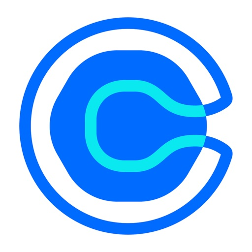

App strength
20M+
Calendly says 20+ million users across 230+ countries already rely on the platform.

Calendly Mobile AI teardownThe desktop product keeps getting better at removing back-and-forth. The mobile app still struggles when a rep, recruiter, or operator needs to override availability, fix a stale slot, or safely reschedule while away from a laptop.
Calendly says 20+ million users across 230+ countries already rely on the platform.
Combined public ratings on iOS and Android still come with repeated complaints around mobile recovery flows.
One stale one-time link or failed override turns into manual follow-up, support overhead, and lost confidence.
Recent review data points in the same direction on both stores: users like Calendly when it stays out of the way, but they lose trust when availability changes, sync lags behind reality, or the only answer is "go back to desktop."
iOS reviewers call out desktop-only override workarounds. Android reviewers report they can no longer edit availability hours in-app. The problem is not booking. It is fixing the schedule once it moves.
Public feedback mentions stale one-time links, slot errors, inaccurate time behavior, and login loops. Those failures hit when a real customer or candidate is already in motion.
Calendly is pushing deeper into LinkedIn, browser-embedded scheduling, enterprise routing, and AI assistants. That makes mobile field control more important, not less.
This concept does not rework Calendly's core booking flow. It adds the missing rescue tools: a same-day override, visible sync health, and a safe reschedule path that tells the user what will actually update before they hit save.
GTM operations teams care about meeting conversion and system trust. When mobile users cannot confidently fix availability, the problem shows up as missed pipeline, manual cleanup, and support burden across the org.
Fast to share. Fragile when the schedule changes in real time.
Your 2:30 PM intro was moved offline. Need to reclaim the rest of the afternoon quickly.
Custom date changes are hidden, so the host still has to leave mobile to protect open slots.
The app knows there is a conflict, but it does not explain which source changed or what propagated.
Reviewers keep pointing to login loops, stale scheduling links, and changes that are easier to fix on desktop than on the phone they already have in hand.
Show the host exactly what changed and what the app can safely repair.
Google Calendar, Outlook, and one-time links refreshed 42 seconds ago.
"This override touches 2 meetings and 1 shared link. Save now, resend updates, and keep the rest of the day intact."
It keeps the happy path intact while turning mobile into a trustworthy recovery surface for the edge cases that create real ops drag.
Refine the highest-stakes admin flows first: date override, conflict preview, mobile reschedule, and resend actions tied to affected invitees.
Add sync-health visibility, auth-state diagnostics, and recovery actions directly inside the app so users can self-correct without opening support articles.
Support the platform team with stronger mobile regression coverage, CI/CD guardrails, and issue triage that protects cross-platform parity as the product surface expands.
Map the specific override, sync, and auth paths that appear in reviews and support conversations.
Launch the fast, high-confidence admin actions that save live meetings without rebuilding the whole app.
Use CI/CD and release instrumentation to keep mobile parity stable as Calendly expands AI and workflow features.